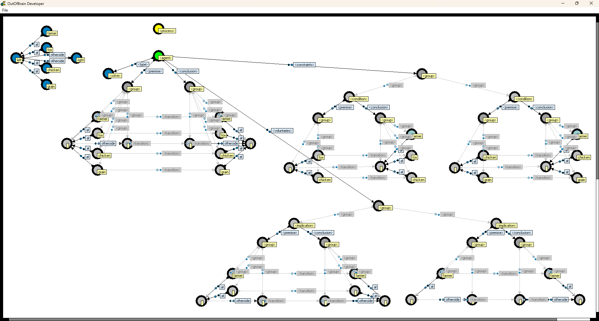

OutOfBrain
OutOfBrain (2006) is an application for developing and running multi-agent systems based on graph rewriting.
OutOfBrain is a multi-agent system that runs in an executable graph, where instructions and memory reside in the same space. OutOfBrain's executable graph is visualized in real-time. OutOfBrain is a client-server developer program - multiple developers can view and edit the same graph in real-time.
See the reference manual: OutOfBrain Reference Manual
Screenshots:
Dining Philosophers
River Crossing Puzzle

Joris IJsselmuiden (University of Groningen) did his master thesis in 2006 using OutOfBrain as a platform for studying qualitative decision theory and graph rewriting. See Joris IJsselmuiden's paper Qualitative Decision Theory and Graph Rewriting in an Adaptive Diary Assistant, available here and here.